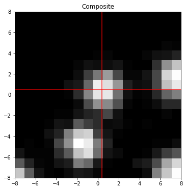
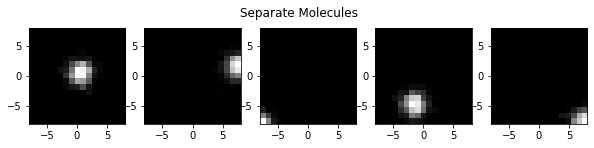
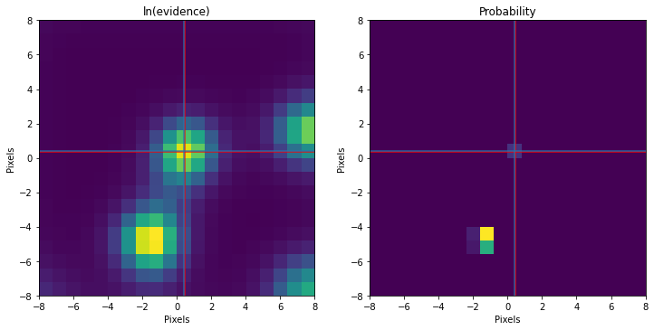
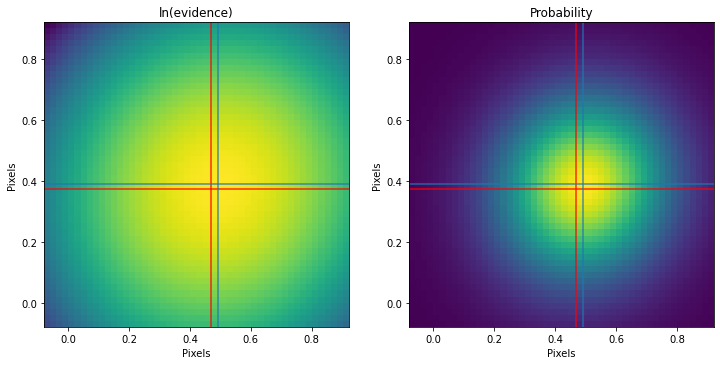
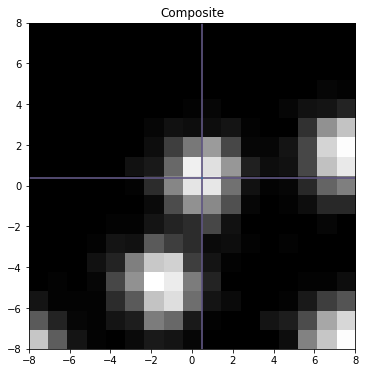

import numpy as np
import matplotlib.pyplot as pltSuper-resolution Microscopy using BITS
fluorescence
SMLM
microscopy
single-molecule
This notebook is an example of how to super resolve spots in fluorescence microscopy data (a la Single-Molecule Localization Microscopy).
Introduction
Super resolution microscopy is an imaging technique where the diffraction limit is circumvented by localizing the center of diffraction-limited fluorophore “spots”.
Here, we localize these spots in an image by finding the pixels (and later, the locations inside a pixel) where the templates for these spots have maximum evidence of matching the local shape of the data.
from scipy.special import betainc,betaln,gammaln
def lnevidence(x,y):
N=float(x.size)
ex = np.nanmean(x)
exx = np.nanmean(x*x)
ey = np.nanmean(y)
eyy = np.nanmean(y*y)
exy = np.nanmean(x*y)
vx = exx - ex*ex + 1e-300
vy = eyy - ey*ey + 1e-300
vxy = exy - ex*ey + 1e-300
r = vxy/np.sqrt(vx*vy)
r2 = r*r
M = (N-2.)/2.
lndels = 3.*np.log(1e30)
lnev = gammaln(M) - N/2.*np.log(N) -.5*np.log(vx) - np.log(2.) - lndels - M*(np.log(np.pi)+np.log(vy)+np.log(1.-r2)) + np.log(1.+np.sign(r)*betainc(.5,M,r2))
return lnevFirst, let us simulate a fluorescence image of a single molecule. To replicate a realistic dataset, we add Poisson noise to our image.
np.random.seed(8)
nxy = 17
w = 1.25
I0 = 80.
offset = 200.
bounds = 1.0
extra_molecules = 4
mu = (np.random.rand(2)-.5)*bounds
xy = np.linspace(-(nxy-1.)//2,(nxy-1.)//2,nxy)
gx,gy = np.meshgrid(xy,xy,indexing='ij')
z = np.random.poisson(I0*np.exp(-.5/(w**2.)*((mu[0]-gx)**2.+(mu[1]-gy)**2.))) + 0.
print('Nphotons (main)',z.sum())
print('Centroid (main) %.3f %.3f'%(mu[1],mu[0]))
z += offset
separate = np.zeros((extra_molecules+1,nxy,nxy))
separate[0] = z.copy()
for i in range(extra_molecules):
_mu = (np.random.rand(2)-.5)*nxy*1.1
_z = np.random.poisson(I0*np.exp(-.5/(w**2.)*((_mu[0]-gx)**2.+(_mu[1]-gy)**2.))) + 0.
z += _z
separate[i+1] = _z.copy()
fig,ax=plt.subplots(1,figsize=(6,6))
ax.set_title('Composite')
ax.imshow(z,interpolation='nearest',cmap='Greys_r',origin='lower',extent=[xy.min(),xy.max(),xy.min(),xy.max()])
ax.axvline(mu[0],color='r',alpha=.8)
ax.axhline(mu[1],color='r',alpha=.8)
plt.show()
if extra_molecules > 0:
fig,ax = plt.subplots(1,separate.shape[0],figsize=(separate.shape[0]*2.,2))
fig.suptitle('Separate Molecules')
for i in range(separate.shape[0]):
ax[i].imshow(separate[i],interpolation='nearest',cmap='Greys_r',origin='lower',extent=[xy.min(),xy.max(),xy.min(),xy.max()])
plt.show()
Nphotons (main) 750.0
Centroid (main) 0.469 0.373

Initial localization
First, we grid the image into coarsely spread out points where a molecule might be centered. We’ll generate a template with some chosen guess width, and using the wrong noise model (i.e. Gaussian noise instead of Poisson noise), calculate the evidence for each template. We will zoom in on whichever grid point gives us the best evidence for the next step.
ns = 20
sxy = np.linspace(xy.min(),xy.max(),ns)
out = np.zeros((ns,ns))
ww = 1.5
from tqdm.notebook import trange
for i in trange(sxy.size):
for j in range(sxy.size):
mx = sxy[i]
my = sxy[j]
template = np.exp(-.5/(ww**2.)*((mx-gx)**2.+(my-gy)**2.))
out[i,j] = lnevidence(template,z)
#### Only use the central spot in this examples. Often other spots win first sighting....
omax = out[nxy//2-2:nxy//2+2+1,nxy//2-2:nxy//2+2+1].max()
for i in range(sxy.size):
for j in range(sxy.size):
if out[i,j] == omax:
mx = sxy[i]
my = sxy[j]
break
print('Truth %.3f %.3f'%(mu[1],mu[0]))
print('Found %.3f %.3f'%(my,mx))
fig,ax = plt.subplots(1,2,figsize=(12,6))
ax[0].imshow(out,interpolation='nearest',cmap='viridis',origin='lower',extent=[sxy.min(),sxy.max(),sxy.min(),sxy.max()])
ax[0].set_title('ln(evidence)')
q = np.exp(out-out.max())/np.nansum(np.exp(out-out.max()))
# q[np.bitwise_not(np.isfinite(q))] = 0.
ax[1].imshow(q,interpolation='nearest',cmap='viridis',origin='lower',extent=[sxy.min(),sxy.max(),sxy.min(),sxy.max()])
ax[1].set_title('Probability')
for aa in ax:
aa.axhline(y=mu[0],color='r',alpha=.8)
aa.axvline(x=mu[1],color='r',alpha=.8)
aa.axhline(mx,color='tab:blue',alpha=.8)
aa.axvline(my,color='tab:blue',alpha=.8)
for aa in ax:
aa.set_xlabel('Pixels')
aa.set_ylabel('Pixels')
plt.show()Truth 0.469 0.373
Found 0.421 0.421
We can see that our method has identified multiple local maxima. As an aside, this grid scanning and local shape calculation is exactly how our method of Bayesian Inference-based Template Search (BITS) works (you can find another example for this here. Note that we are only picking the central peak in this example.
Zooming in
Now let’s zoom into the pixel we found the molecule located in. We will use the same process performed above: sub-divide this region into a grid, create templates (PSF) centered at each grid point, calculate the evidence, and then compare to find the best fit.
ns = 50
sx = np.linspace(mx-.5,mx+.5,ns)
sy = np.linspace(my-.5,my+.5,ns)
out = np.zeros((ns,ns))
ww = 1.5
print('Init %.3f %.3f'%(my,mx))
for i in range(sx.size):
for j in range(sy.size):
mx = sx[i]
my = sy[j]
template = np.exp(-.5/(ww**2.)*((mx-gx)**2.+(my-gy)**2.))
out[i,j] = lnevidence(template,z)
omax = out.max()
for i in range(sx.size):
for j in range(sy.size):
if out[i,j] == omax:
mx = sx[i]
my = sy[j]
break
print('Truth %.3f %.3f'%(mu[1],mu[0]))
print('Found %.3f %.3f'%(my,mx))
fig,ax = plt.subplots(1,2,figsize=(12,6))
ax[0].imshow(out,interpolation='nearest',cmap='viridis',origin='lower',extent=[sy.min(),sy.max(),sx.min(),sx.max()])
q = np.exp(out-out.max())/np.nansum(np.exp(out-out.max()))
ax[1].imshow(q,interpolation='nearest',cmap='viridis',origin='lower',extent=[sy.min(),sy.max(),sx.min(),sx.max()])
for aa in ax:
aa.axhline(mu[0],color='r',alpha=.8)
aa.axvline(mu[1],color='r',alpha=.8)
aa.axhline(mx,color='tab:blue',alpha=.8)
aa.axvline(my,color='tab:blue',alpha=.8)
ax[0].set_title('ln(evidence)')
ax[1].set_title('Probability')
for aa in ax:
aa.set_xlabel('Pixels')
aa.set_ylabel('Pixels')
plt.show()Init 0.421 0.421
Truth 0.469 0.373
Found 0.492 0.390
Final Localization
print('Sub-pixel localization error (%%) %.3f %.3f'%(100*np.abs((my-mu[1])/1.),100*np.abs((mx-mu[0])/1.)))
fig,ax=plt.subplots(1,figsize=(6,6))
ax.set_title('Composite')
ax.imshow(z,interpolation='nearest',cmap='Greys_r',origin='lower',extent=[xy.min(),xy.max(),xy.min(),xy.max()])
ax.axhline(mu[0],color='r',alpha=.8)
ax.axvline(mu[1],color='r',alpha=.8)
ax.axhline(mx,color='tab:blue',alpha=.8)
ax.axvline(my,color='tab:blue',alpha=.8)
plt.show()Sub-pixel localization error (%) 2.394 1.701